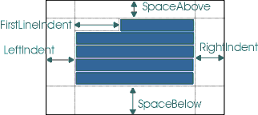

public class StyleConstants extends Object
一系列众所周知的或共同的属性和方法应用到一个钥匙attributeset或MutableAttributeSet获得/设置类型安全的方式的性质。
段落属性构成要呈现的段落的定义。所有的大小是在指定的位置（如发现后记），一个独立于设备的测量。

| Modifier and Type | Class and Description |
|---|---|
static class |
StyleConstants.CharacterConstants
这是一个众所周知的属性，有助于字符样式类型安全枚举。
|
static class |
StyleConstants.ColorConstants
这是一个众所周知的属性，有助于颜色类型安全枚举。
|
static class |
StyleConstants.FontConstants
这是一个众所周知的属性，有助于字体类型安全枚举。
|
static class |
StyleConstants.ParagraphConstants
这是一个众所周知的属性，有助于段落样式类型安全枚举。
|
| Modifier and Type | Field and Description |
|---|---|
static int |
ALIGN_CENTER
段落对齐的可能值。
|
static int |
ALIGN_JUSTIFIED
段落对齐的可能值。
|
static int |
ALIGN_LEFT
段落对齐的可能值。
|
static int |
ALIGN_RIGHT
段落对齐的可能值。
|
static Object |
Alignment
段落对齐。
|
static Object |
Background
背景颜色属性的名称。
|
static Object |
BidiLevel
一个字符的Unicode双向算法分配双向水平。
|
static Object |
Bold
大胆属性的名称。
|
static Object |
ComponentAttribute
组件属性的名称。
|
static String |
ComponentElementName
用于表示组件的元素的名称。
|
static Object |
ComposedTextAttribute
组合文本属性的输入方法的名称。
|
static Object |
Family
字体家族的名称。
|
static Object |
FirstLineIndent
缩进段落的第一行的空间量。
|
static Object |
FontFamily
字体家族的名称。
|
static Object |
FontSize
字体大小的名称。
|
static Object |
Foreground
前景颜色属性的名称。
|
static Object |
IconAttribute
图标属性的名称。
|
static String |
IconElementName
用于表示图标的元素的名称。
|
static Object |
Italic
的斜体属性名称。
|
static Object |
LeftIndent
缩进段落的左侧额。
|
static Object |
LineSpacing
段落的行之间的空格的数量。
|
static Object |
ModelAttribute
用于识别具有模型视图分离的嵌入式对象的模型的属性。
|
static Object |
NameAttribute
属性名称用于命名属性集合的名称。
|
static Object |
Orientation
段落定位。
|
static Object |
ResolveAttribute
属性名称，用于标识属性的解析父组，如果定义了一个。
|
static Object |
RightIndent
缩进段落的右侧额。
|
static Object |
Size
字体大小的名称。
|
static Object |
SpaceAbove
段落上方的空间。
|
static Object |
SpaceBelow
段落下方的空间。
|
static Object |
StrikeThrough
该线的属性名称。
|
static Object |
Subscript
下标属性的名称。
|
static Object |
Superscript
上标属性名称。
|
static Object |
TabSet
这段tabset，类型是一个tabset含有制表位。
|
static Object |
Underline
下划线属性的名称。
|
| Modifier and Type | Method and Description |
|---|---|
static int |
getAlignment(AttributeSet a)
获取对齐设置。
|
static Color |
getBackground(AttributeSet a)
从属性列表中获取背景颜色设置。
|
static int |
getBidiLevel(AttributeSet a)
得到bidilevel设置。
|
static Component |
getComponent(AttributeSet a)
从属性列表中获取组件设置。
|
static float |
getFirstLineIndent(AttributeSet a)
获取第一行缩进的设置。
|
static String |
getFontFamily(AttributeSet a)
从属性列表中获取字体族设置。
|
static int |
getFontSize(AttributeSet a)
从属性列表中获取字体大小设置。
|
static Color |
getForeground(AttributeSet a)
从属性列表中获取前景色设置。
|
static Icon |
getIcon(AttributeSet a)
从属性列表中获取图标设置。
|
static float |
getLeftIndent(AttributeSet a)
获取左缩进设置。
|
static float |
getLineSpacing(AttributeSet a)
获取行间距设置。
|
static float |
getRightIndent(AttributeSet a)
获取正确的缩进设置。
|
static float |
getSpaceAbove(AttributeSet a)
获取设置以上的空间。
|
static float |
getSpaceBelow(AttributeSet a)
获取设置的空间。
|
static TabSet |
getTabSet(AttributeSet a)
得到tabset。
|
static boolean |
isBold(AttributeSet a)
检查是否设置了大胆的属性。
|
static boolean |
isItalic(AttributeSet a)
检查是否斜体属性设置。
|
static boolean |
isStrikeThrough(AttributeSet a)
检查是否删除线属性设置。
|
static boolean |
isSubscript(AttributeSet a)
检查下标属性是否设置。
|
static boolean |
isSuperscript(AttributeSet a)
检查是否设置了上标属性。
|
static boolean |
isUnderline(AttributeSet a)
检查下划线属性是否设置。
|
static void |
setAlignment(MutableAttributeSet a, int align)
设置对齐。
|
static void |
setBackground(MutableAttributeSet a, Color fg)
设置背景颜色。
|
static void |
setBidiLevel(MutableAttributeSet a, int o)
集bidilevel。
|
static void |
setBold(MutableAttributeSet a, boolean b)
设置黑体属性。
|
static void |
setComponent(MutableAttributeSet a, Component c)
设置组件属性。
|
static void |
setFirstLineIndent(MutableAttributeSet a, float i)
设置首行缩进。
|
static void |
setFontFamily(MutableAttributeSet a, String fam)
设置字体属性。
|
static void |
setFontSize(MutableAttributeSet a, int s)
设置字体大小属性。
|
static void |
setForeground(MutableAttributeSet a, Color fg)
设置前台颜色。
|
static void |
setIcon(MutableAttributeSet a, Icon c)
设置图标属性。
|
static void |
setItalic(MutableAttributeSet a, boolean b)
设置字体属性。
|
static void |
setLeftIndent(MutableAttributeSet a, float i)
设置左缩进。
|
static void |
setLineSpacing(MutableAttributeSet a, float i)
设置行间距。
|
static void |
setRightIndent(MutableAttributeSet a, float i)
设置右缩进。
|
static void |
setSpaceAbove(MutableAttributeSet a, float i)
设置上面的空格。
|
static void |
setSpaceBelow(MutableAttributeSet a, float i)
设置下面的空格。
|
static void |
setStrikeThrough(MutableAttributeSet a, boolean b)
设置删除线属性。
|
static void |
setSubscript(MutableAttributeSet a, boolean b)
设置下标属性。
|
static void |
setSuperscript(MutableAttributeSet a, boolean b)
设置上标属性。
|
static void |
setTabSet(MutableAttributeSet a, TabSet tabs)
集tabset。
|
static void |
setUnderline(MutableAttributeSet a, boolean b)
设置下划线属性。
|
String |
toString()
返回字符串表示形式。
|
public static final String ComponentElementName
public static final String IconElementName
public static final Object NameAttribute
public static final Object ResolveAttribute
public static final Object ModelAttribute
public static final Object BidiLevel
public static final Object FontFamily
public static final Object Family
public static final Object FontSize
public static final Object Size
public static final Object Bold
public static final Object Italic
public static final Object Underline
public static final Object StrikeThrough
public static final Object Superscript
public static final Object Subscript
public static final Object Foreground
public static final Object Background
public static final Object ComponentAttribute
public static final Object IconAttribute
public static final Object ComposedTextAttribute
public static final Object FirstLineIndent
public static final Object LeftIndent
public static final Object RightIndent
public static final Object LineSpacing
public static final Object SpaceAbove
public static final Object SpaceBelow
public static final Object Alignment
public static final Object TabSet
public static final Object Orientation
public static final int ALIGN_LEFT
public static final int ALIGN_CENTER
public static final int ALIGN_RIGHT
public static final int ALIGN_JUSTIFIED
public static int getBidiLevel(AttributeSet a)
a -属性设置
public static void setBidiLevel(MutableAttributeSet a, int o)
a -属性设置
o -比迪烟水平值
public static Component getComponent(AttributeSet a)
a -属性设置
public static void setComponent(MutableAttributeSet a, Component c)
a -属性设置
c -组件
public static Icon getIcon(AttributeSet a)
a -属性设置
public static void setIcon(MutableAttributeSet a, Icon c)
a -属性设置
c -图标
public static String getFontFamily(AttributeSet a)
a -属性设置
public static void setFontFamily(MutableAttributeSet a, String fam)
a -属性设置
fam -字体
public static int getFontSize(AttributeSet a)
a -属性设置
public static void setFontSize(MutableAttributeSet a, int s)
a -属性设置
s -字体大小
public static boolean isBold(AttributeSet a)
a -属性设置
public static void setBold(MutableAttributeSet a, boolean b)
a -属性设置
b -指定真/假设置属性
public static boolean isItalic(AttributeSet a)
a -属性设置
public static void setItalic(MutableAttributeSet a, boolean b)
a -属性设置
b -指定真/假设置属性
public static boolean isUnderline(AttributeSet a)
a -属性设置
public static boolean isStrikeThrough(AttributeSet a)
a -属性设置
public static boolean isSuperscript(AttributeSet a)
a -属性设置
public static boolean isSubscript(AttributeSet a)
a -属性设置
public static void setUnderline(MutableAttributeSet a, boolean b)
a -属性设置
b -指定真/假设置属性
public static void setStrikeThrough(MutableAttributeSet a, boolean b)
a -属性设置
b -指定真/假设置属性
public static void setSuperscript(MutableAttributeSet a, boolean b)
a -属性设置
b -指定真/假设置属性
public static void setSubscript(MutableAttributeSet a, boolean b)
a -属性设置
b -指定真/假设置属性
public static Color getForeground(AttributeSet a)
a -属性设置
public static void setForeground(MutableAttributeSet a, Color fg)
a -属性设置
fg -颜色
public static Color getBackground(AttributeSet a)
a -属性设置
public static void setBackground(MutableAttributeSet a, Color fg)
a -属性设置
fg -颜色
public static float getFirstLineIndent(AttributeSet a)
a -属性设置
public static void setFirstLineIndent(MutableAttributeSet a, float i)
a -属性设置
i -价值
public static float getRightIndent(AttributeSet a)
a -属性设置
public static void setRightIndent(MutableAttributeSet a, float i)
a -属性设置
i -价值
public static float getLeftIndent(AttributeSet a)
a -属性设置
public static void setLeftIndent(MutableAttributeSet a, float i)
a -属性设置
i -价值
public static float getLineSpacing(AttributeSet a)
a -属性设置
public static void setLineSpacing(MutableAttributeSet a, float i)
a -属性设置
i -价值
public static float getSpaceAbove(AttributeSet a)
a -属性设置
public static void setSpaceAbove(MutableAttributeSet a, float i)
a -属性设置
i -价值
public static float getSpaceBelow(AttributeSet a)
a -属性设置
public static void setSpaceBelow(MutableAttributeSet a, float i)
a -属性设置
i -价值
public static int getAlignment(AttributeSet a)
a -属性设置
StyleConstants.ALIGN_LEFT
public static void setAlignment(MutableAttributeSet a, int align)
a -属性设置
align的对齐值
public static TabSet getTabSet(AttributeSet a)
a -属性设置
TabSet
public static void setTabSet(MutableAttributeSet a, TabSet tabs)
a -属性设置。
tabs - tabset
Submit a bug or feature
For further API reference and developer documentation, see Java SE Documentation. That documentation contains more detailed, developer-targeted descriptions, with conceptual overviews, definitions of terms, workarounds, and working code examples.
Copyright © 1993, 2014, Oracle and/or its affiliates. All rights reserved.